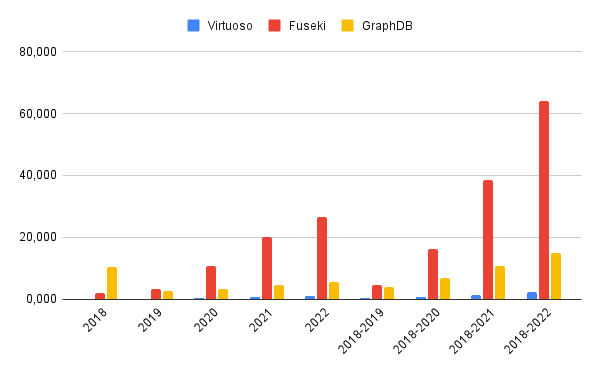
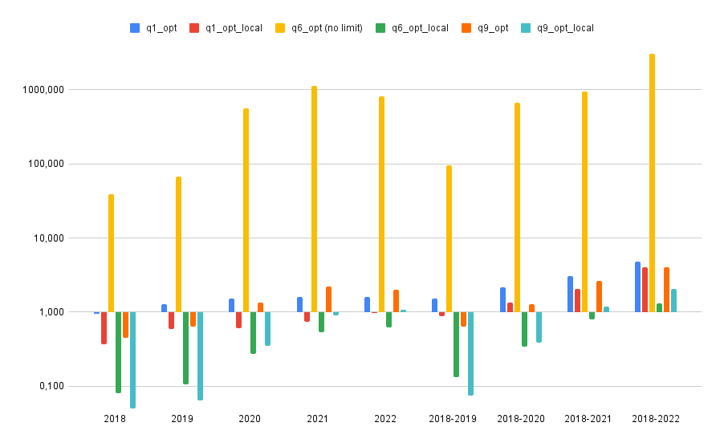

Copyright 2019 Reflux Design
Calculating Transparency Indicators with SPARQL for
the EU Public Procurement Data Space
The EU Public Procurement Data Space (PPDS) has the main goal of providing a standard access point to public contracting data on a European level. For that semantic technologies (ontologies, knowledge graphs) will be used for integrating said information in a consensual way and following good practices for data publishing on the web. Once the data model and the data transformation processes have been developed, the information will be analyzed, and implemented for example data visualizers to facilitate the comprehension or the calculation of indicators.
Once the data is integrated and accessible in the form of an RDF graph, the data needs to be exploited using SPARQL queries. One of the most relevant tasks of the PPDS is the ability to calculate a set of EU transparency indicators using these data. These are analytical queries that need to execute aggregation operations such as SUM, COUNT, and AVG. These tasks have not been widely studied in the research literature and we still do not know what would be the behavior of the different triplestores running them. Hence, the first task we perform and the results reported in this document are related to the systematic study of the benchmarking of RDF triplestores over aggregated SPARQL queries.
We present the results of evaluating the performance and scalability of query execution for a set of transparency indicators over public procurement RDF data. We describe how we construct the dataset for the evaluation, what queries and indicators are used, and finally, the engines, metrics, and setup chosen. We report the obtained results which will help to decide and select the triplestore that better fits for answering analytical queries over RDF public procurement graphs.
Dataset construction
The dataset is constructed using the CODICE datasets provided by the Spanish Ministry of Finance. These datasets were previously used during the PPDS proof of concept in December 2022 and are openly available. We select all data sources from 2018 until 2022. We transform (using RML mappings and the RMLMapper engine) these input sources into an integrated knowledge graph per year. We manually clean the output knowledge graph for duplicate removal using basic bash scripts, as it is not efficiently implemented in the RMLMapper tool, and RDF is composed of a set of triples (it does not allow duplicates). The size of the used datasets (in XML and in RDF) is shown in Table 1.
| Year | Number of XML Documents |
Total XML Size | Total RDF Size (with duplicates) |
Total RDF Size (w/o duplicates) |
|---|---|---|---|---|
| 2018 | 314 | 3.3 GB | 2.0 GB | 344 MB |
| 2019 | 479 | 5.4 GB | 3.0 GB | 504 MB |
| 2020 | 522 | 5.1 GB | 2.7 GB | 540 MB |
| 2021 | 700 | 6.7 GB | 3.9 GB | 693 MB |
| 2022 | 883 | 10 GB | 5.3G | 832 MB |
As one of the main objectives of this task is to test the performance and scalability of the triplestores when aggregated queries are executed, we combine the RDF graphs previously created for generating bigger datasets. Table 2 shows the total size of each RDF graph as well as its total number of triples. We construct the different datasets incrementally, i.e. starting from 2018, we combined the triples from the following years to increase the size of the graph and study the impact of querying historical data. For example, the dataset 2018-2021, includes all triples from 2018, 2019, 2020, and 2021.
| Datasets | Total Size (RDF) | Number of Triples |
|---|---|---|
| 2018 | 344 MB | 1,533,314 |
| 2019 | 504 MB | 2,245,997 |
| 2020 | 540 MB | 2,412,750 |
| 2021 | 693 MB | 3,096,404 |
| 2022 | 832 MB | 3,707,545 |
| 2018-2019 | 847 MB | 3,779,311 |
| 2018-2020 | 1.4 GB | 6,192,061 |
| 2018-2021 | 2.1 GB | 9,288,465 |
| 2018-2022 | 2.9 GB | 12,996,010 |
Queries
The queries used for running the experimental evaluation are an enhanced version of the queries for indicators 1, 6, and 9 developed during the PPDS proof of concept in December 2022. We have removed unnecessary triple patterns and data fields that were retrieved in the SELECT clauses. We have removed some of the subqueries that were unnecessary. The updated queries can be found in the Gitlab of the project (link soon).
Additionally, to study the impact of querying external resources, we incorporate a new version of each query, removing the SERVICE clause that retrieved data from the authority tables of the publication office. In contrast, we upload locally the necessary RDF graph to obtain the same results. Hence, each query has two different versions (e.g., indicator1_local.rq and indicator1_service.rq).
PREFIX epo: <http://data.europa.eu/a4g/ontology#>
PREFIX rdf: <http://www.w3.org/1999/02/22-rdf-syntax-ns#>
PREFIX legal: <https://www.w3.org/ns/legal#>
PREFIX dcterms: <http://purl.org/dc/terms/>
PREFIX dc: <http://purl.org/dc/elements/1.1/>
PREFIX xsd: <http://www.w3.org/2001/XMLSchema#>
PREFIX pocgraph: <http://data.europa.eu/a4g/graph/ppds-poc/>
SELECT DISTINCT ?countryID ?year ?amountLots ?numSingleBidders ((?indicator/100) AS ?indicator1) WHERE {
{
SELECT DISTINCT ?countryID ?year ?amountLots ?numSingleBidders
((xsd:float(xsd:float(?numSingleBidders)/xsd:float(?amountLots))*100) AS ?indicator) WHERE {
{
SELECT DISTINCT ?countryID ?year (COUNT(DISTINCT ?lot) AS ?amountLots)
(SUM(if(?bidders = "single-bidder", 1, 0)) AS ?numSingleBidders) WHERE {
?proc a epo:Procedure .
?proc epo:hasProcedureType ?p .
FILTER ( ?p != <http://publications.europa.eu/resource/authority/procurement-procedure-type/neg-wo-call>)
?proc epo:hasProcurementScopeDividedIntoLot ?lot .
?statistic a epo:SubmissionStatisticalInformation .
?statistic epo:concernsSubmissionsForLot ?lot .
?statistic epo:hasReceivedTenders ?c .
BIND(IF(?c = 1,"single-bidder","multiple-bidders") AS ?bidders) .
?resultnotice a epo:ResultNotice .
?resultnotice epo:refersToProcedure ?proc .
?resultnotice epo:hasDispatchDate ?ddate .
BIND(year(xsd:date(?ddate)) AS ?year) .
?resultnotice epo:refersToRole ?buyerrole .
{
SELECT DISTINCT ?buyerrole ?countryID WHERE {
?buyerrole epo:playedBy ?org .
?org legal:registeredAddress ?orgaddress .
?orgaddress epo:hasCountryCode ?countrycode .
?countrycode dc:identifier ?countryID .
?org epo:hasBuyerType ?buytype .
FILTER (?buytype != <http://publications.europa.eu/resource/authority/buyer-legal-type/eu-int-org> )
}
}
} GROUP BY ?countryID ?year ORDER BY ?countryID ?year }
}
}
}
Query 1: Example of a local query to calculate the amount of contracts that have a single bidder
Engines
We use the free version of GraphDB (v10.2.1), the open-source Jena Fuseki (v4.8.0), and the community version of Virtuoso (v7.2.1). All triplestores are configured to store the graph in physical memory. We performed previous experiments over Jena Fuseki in its in-memory configuration, but the performance is highly impacted, so we decided to not take into account. Each engine has different function implementations that are used for some of the queries used in the benchmark. For example, for calculating the difference between two dates, GraphDB uses the function ofn:days-from-duration, Jena Fuseki is able to parse fn:days-from-duration, while in Virtuoso a simple rest operation works ((?date1-?date2)/(3600*24)).
We tried to incorporate the qEndpoint engine, used by the Kohesio platform, but we found that the engine has important performance bugs for aggregated queries, see the discussion. So at this moment, we do not recommend its use for the PPDS.
Metrics and Setup
We measure query execution time as the total time from query execution until the complete answer is generated. We also report the geometric mean of all queries that generate graphs in the same metadata representation. The geometric mean reports the central tendency of all execution times for a set of queries, reducing the effect of outliers. With this metric, we provide a general measurement of the performance of each triplestore when generating graphs in each representation. We run every experiment 5 times with a timeout of 24h, measure the time, and calculate the median. We run all experiments over an Ubuntu 20.04 server with 32 cores Intel(R) Xeon(R) Gold 5218R CPU @ 2.10GHz 102400 Mb RAM RDIMM, 3200 MT/s and 100 Gb HD SSD 6 Gb/s.
Results
Figure 1 reports the geometric mean of all queries over each dataset (including queries with local and federated access). We observe that Virtuoso obtains better results in terms of execution time for all datasets. This means that, in general, Virtuoso outperforms Fuseki and GraphDB for all queries and dataset configurations. We also observe that the increase in the dataset size impacts the performance of the engines. For example, Virtuoso outputs 0,114 seconds as the geometric mean for the 2018 dataset, while the time is increased to 2,221 seconds for the 2018-2022 dataset. GraphDB, and mostly Fuseki, are highly impacted by the increasing of the dataset performance. Fuseki results in 64,007 seconds as the geometric mean for the 2018-2022 dataset. GraphDB reports better results, but in general, the performance is not comparable to the results obtained by Virtuoso.

Figure 1: Geometric mean of all queries over each dataset
For a more fine-grained analysis of the results, we show the results of Virtuoso for each query in Figure 2. The median of the 5 executions is reported. The first observation is that the dependency on external resources such as the Publication Office SPARQL endpoint, in this case, has a clear impact on all queries. For all configurations, the query version that depends on external resources (i.e. qX_opt, where X is the indicator number) reports always worse performance than the ones that retrieve these answers from a local graph (i.e. qX_opt_local, where X is the indicator number).

Figure 2: Execution time of each query and dataset over Virtuoso